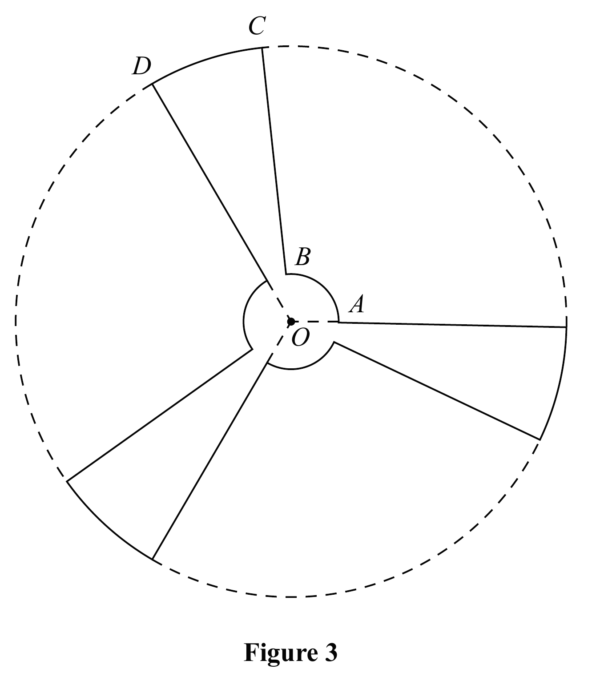
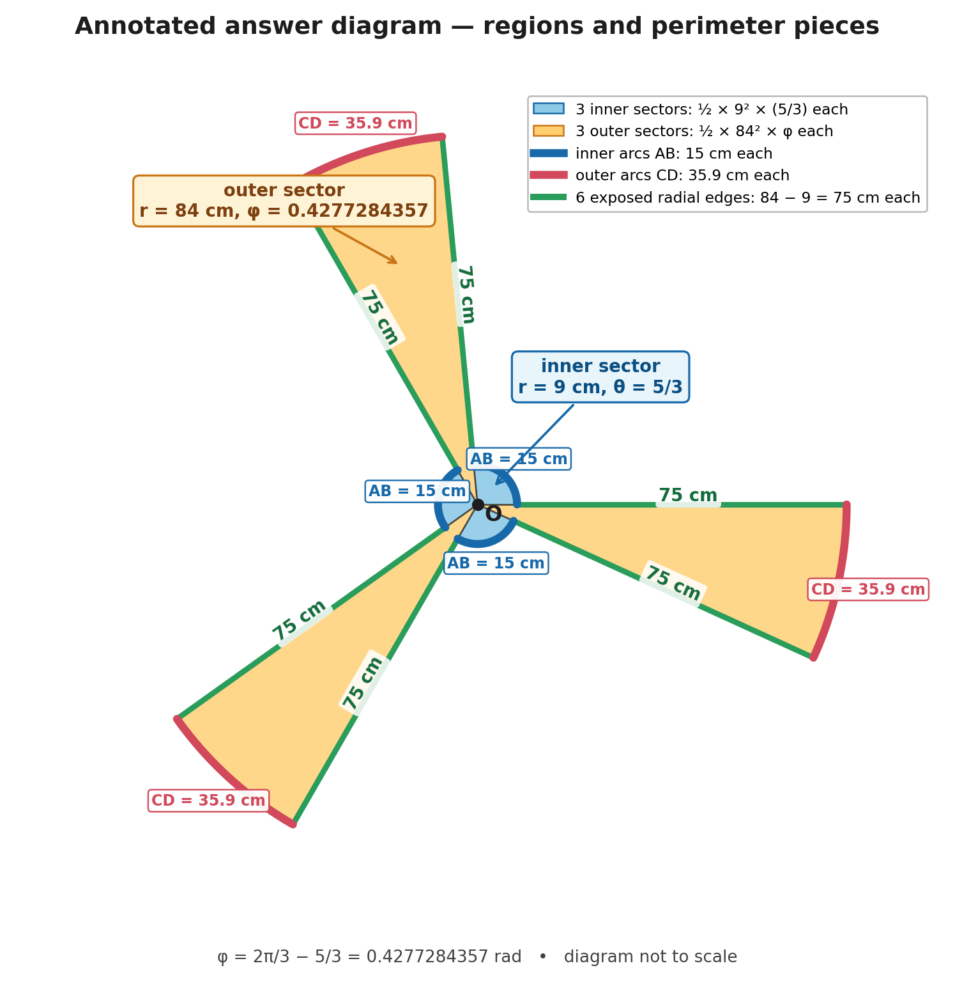

Figure 3 shows a sketch of the outline of the face of a ceiling fan viewed from below.
The fan consists of three identical sections congruent to \(OABCDO\), shown in Figure 3, where
- \(OABO\) is a sector of a circle with centre \(O\) and radius \(9\) cm
- \(OBCDO\) is a sector of a circle with centre \(O\) and radius \(84\) cm
- angle \(AOD=\frac{2\pi}{3}\) radians
Given that the length of the arc \(AB\) is \(15\) cm,
(a) show that the length of the arc \(CD\) is \(35.9\) cm to one decimal place.
(3)
The face of the fan is modelled to be a flat surface.
Find, according to the model,
(b) the perimeter of the face of the fan, giving your answer to the nearest cm,
(2)
(c) the surface area of the face of the fan.
Give your answer to 3 significant figures and make your units clear.
(5)
[10 marks]

Not covered in the lesson — official-reference reconstruction below.
Strategy and why this applies. Use arc length twice: first find the inner-sector angle, then subtract it from the total section angle to obtain the outer-arc angle.
Formula first. For an angle \(\theta\) in radians, arc length is \(s=r\theta\). Let \(\theta\) be the angle subtended by inner arc \(AB\). Then
\[15=9\theta\quad\Rightarrow\quad\theta=\frac{15}{9}=\frac53.\]The entire section angle is \(\angle AOD=\tfrac{2\pi}{3}\). Arc \(CD\) is subtended by the remaining angle \(\phi\), not by \(5/3\):
\[\phi=\frac{2\pi}{3}-\frac53=0.427728\ldots\text{ rad}.\]Now use the outer radius \(84\) cm:
\[CD=84\phi=84\left(\frac{2\pi}{3}-\frac53\right)=35.929\ldots\text{ cm}=35.9\text{ cm (1 d.p.)}.\]Sense check and transfer trigger. The outer arc uses radius 84, while the inner arc uses radius 9; mixing those radii destroys the geometry. Since \(\phi\approx0.428\), the outer arc should be about \(0.428\times84\approx36\) cm, confirming the scale. In a compound-sector diagram, label a separate central angle for every arc and make their sum match the displayed total angle before substituting radii.
Strategy and why this applies. Count the full external boundary of all three congruent sections: six arcs in total and six radial edge segments.
Boundary count. One fan section contributes inner arc \(AB\), outer arc \(CD\), and two straight radial edges from radius 9 to radius 84. Each straight edge therefore has length \(84-9=75\) cm. There are three identical sections, so the curved contribution is \(3(15+35.929\ldots)\), and the six straight edges contribute \(6(75)\).
\[P=3(15+35.929\ldots)+6(84-9).\]Calculate without rounding the arc prematurely:
\[P=152.787\ldots+450=602.787\ldots\text{ cm}.\] \[\boxed{P=603\text{ cm to the nearest cm}}.\]Why the simple sector formula fails. The fan is not one sector, so \(2r+s\) is not its perimeter. That expression would count two full radii from the centre, but the actual boundary has six shorter radial gaps and six arcs distributed around three blades. A boundary walk around the diagram is the reliable method.
Sense check and transfer trigger. The straight edges alone total \(450\) cm, so a perimeter near \(603\) cm is plausible; the invalid expression \(2r+\text{arc}=603\) cannot be reconciled with either stated radius. For repeated compound shapes, compute one component's exposed pieces, multiply by the number of congruent copies, and ensure shared/internal edges are not counted.
Strategy and why this applies. Partition one section \(OABCDO\) into its two non-overlapping coloured regions: the amber outer sector of radius \(84\) and angle \(\phi\), and the blue inner sector of radius \(9\) and angle \(5/3\). Find both areas, add them to make one complete section, then multiply by the three congruent sections.
Formula first. For a sector whose angle \(\theta\) is in radians, \(A=\tfrac12r^2\theta\). First square the outer radius:
\[84^2=7056.\]The angle of the amber outer sector is the remainder after the blue inner-sector angle is removed from \(\angle AOD\):
\[\phi=\frac{2\pi}{3}-\frac53=0.4277284357\text{ rad}.\]Amber outer region in one section. It uses \(r=84\), hence \(r^2=7056\), and angle \(\phi=0.4277284357\):
\[A_{\text{outer}}=\frac12\times7056\times0.4277284357=1509.025921\text{ cm}^2.\]Blue inner region in the same section. It uses \(r=9\), so \(9^2=81\), and angle \(5/3\):
\[A_{\text{inner}}=\frac12\times81\times\frac53=67.5\text{ cm}^2.\]These two named regions meet along an edge and do not overlap, so the area of one complete section is
\[A_{\text{one section}}=1509.025921+67.5=1576.525921\text{ cm}^2.\]There are three congruent sections, so retain the unrounded values and multiply the complete one-section area by \(3\):
\[A_{\text{fan}}=3\times1576.525921\ldots=4729.577764\text{ cm}^2.\]To 3 significant figures, with the required units made clear,
\[\boxed{A_{\text{fan}}=4730\text{ cm}^2\text{ (3 s.f.)}}.\]If square metres are preferred, \(1\text{ m}^2=10{,}000\text{ cm}^2\), so
\[4729.577764\text{ cm}^2\div10{,}000=0.4729577764\text{ m}^2=\boxed{0.473\text{ m}^2\text{ (3 s.f.)}}.\]Sense check and transfer trigger. The amber radius-84 term is about \(1509\text{ cm}^2\), much larger than the blue radius-9 term \(67.5\text{ cm}^2\), as expected because sector area scales with \(r^2\). Three sections should therefore give a little under \(3\times1600=4800\text{ cm}^2\), consistent with \(4729.6\text{ cm}^2\). In any repeated compound-sector problem, name each non-overlapping region, apply \(\tfrac12r^2\theta\) to the correct radius and angle, form one full repeated unit, and only then multiply.
Annotated answer diagram. The colours tie the two area terms to their regions and mark every perimeter component: blue inner sectors/arcs, amber outer sectors, red outer arcs, and the six green \(75\)-cm radial edges.
